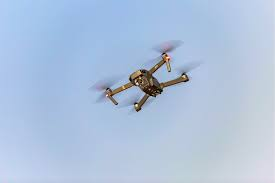
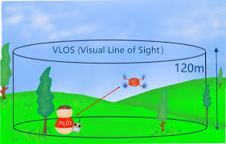

Requisiti e Regole
I droni A1 possono essere utilizzati in aree urbane con determinati vincoli di sicurezza.
Il peso massimo consentito è di 250g.
È obbligatorio mantenere una distanza di sicurezza dalle persone.
Non è necessaria una formazione pratica obbligatoria.
È richiesta la registrazione presso ENAC.
È vietato il sorvolo di assembramenti.
Il pilota deve sempre mantenere il contatto visivo con il drone.
Il volo notturno è possibile con luci di segnalazione.
La massima altezza consentita è di 120 metri.
È importante conoscere le aree interdette al volo.
 